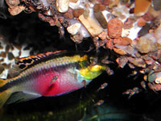

A plastic tank cave for tropical fish

Female
Pelvicachromis pulcher
watches its fry near the cave
It's an easy construction. There are many holes for fish, especially for those who like darkness and narrow holes (mostly catfish do, which dormant all day long)
Black color hides not very dense attachment of stones. It is better to use black plastic but I painted white air ducts.
The cave is made of rectangular and round plastic pipes. Total size is about 40x30x20 cm. Parts of pipes are connected by plastic ties. Also you may use black aquarium silicone sealant.
Visible surface is covered by gravel from the same tank. The gravel was previously washed, boiled and dried for better grasp with sealant.
Gravel fills specially made pots which was then planted. You may place here a piece of clay as enrichment for plants.
Firstly you may attach some plants by green thread. Vallisneria itself climbs up by its roots.

The last picture is my 100L aquarium with a version of such cave. Here cichlids and barbuses spawned. You see that vallisneria grasps plastic pipes covered by gravel.

E.Kornienko